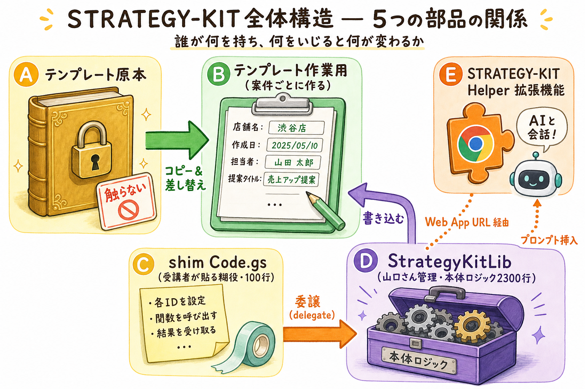

5つの部品が、何を担当して、どう繋がっているか
v0.11.1 / 2026-05-07 時点STRATEGY-KIT は 5つの部品が連動して動く仕組み です。
エンジニアでなくても全体像が掴めるように、
「どれが何を担当しているか」「どこをいじるとどこに書き込まれるか」を順に見ていきます。

まず、STRATEGY-KIT に出てくる「部品」を5つに絞って整理します。色分けはこのページ全体で統一しています。
🔒 触らない金庫。全案件のひな型。
{{店舗名}} など差し替え用の目印が入った白紙のひな型。📝 ここに戦略を書き込む。案件1件 = 1ファイル。
{{店舗名}} が「エナジー柏店」などに置換された Doc。🩹 のり役。約100行の薄いファイル。
🧠 全部の頭脳。約2,300行のロジック。
🧩 ブラウザの右上にあるボタン。AI画面 → 作業用Doc の橋渡し。
5つの部品が、誰から誰へリクエストを送るかを矢印で表します。色は 1の番号と同じ です。
実線 = 主な流れ／点線 = 補助の流れ。色は各部品の番号に対応
ここが一番分かりにくい部分です。shim（しむ）= 受付係 / ライブラリ = 厨房 と思ってください。
shim は「受付係」、ライブラリは「厨房」。注文だけ受けて、料理はぜんぶ厨房
同じ Google ドキュメントなのに、なぜ2種類あるのか？ 金型 と その金型から打ち抜いた製品 の関係です。
原本＝1ファイル固定／作業用＝案件ごとに増える
「Chrome 拡張のサイドパネルでボタンを押すと、最終的に作業用 Doc が更新される」までの流れを追います。
拡張機能 → shim → ライブラリ → 作業用 Doc の4段階を経由
受講者がよく行う操作と、その結果どこに何が書かれるかをまとめました。
| 受講者がやる操作 | 経由する部品 | 最終的に書き換わる場所 |
|---|---|---|
| ドキュメントメニュー 「テンプレート原本セットアップ」 |
③ shim → ④ ライブラリ | 作業用 Doc のスクリプトプロパティ SK_TEMPLATE_DOC_ID に原本の Doc ID を保存 |
| ドキュメントメニュー 「新規マスタードキュメント作成 → 業種選択」 |
③ shim → ④ ライブラリ → ① 原本 | 原本を makeCopy() → 新しい ② 作業用 Doc が生成される（差し替え後の Doc ID が SK_DOC_ID に登録） |
| ドキュメントメニュー 「§99 決定ログに追記」 |
③ shim → ④ ライブラリ | ② 作業用 Doc の §99 セクション末尾に1行追記 |
| ドキュメントメニュー 「§N 要点版を生成・追記（手動）」 |
③ shim → ④ ライブラリ | ② 作業用 Doc の §N 章末に「要点版（500字以内）」を挿入 |
| Chrome 拡張サイドパネルで 「§3 を取得して貼付」 |
⑤ 拡張 → ③ shim → ④ ライブラリ | ② 作業用 Doc から §3 本文を読み出し、AI 画面のプロンプト欄に挿入 |
| Chrome 拡張で 「Gemini プロキシ実行」 |
⑤ 拡張 → ③ shim → ④ ライブラリ → Gemini API | 外部 Gemini API を呼び出し、結果を返す（受講者の GEMINI_API_KEY を使用） |
| Chrome 拡張オプションで 「GAS Web App URL を登録」 |
⑤ 拡張 内のみ | Chrome の chrome.storage.sync に gasWebAppUrl_v10 として保存 |
| 原本 Doc を直接編集（禁止操作） | — | ① 原本 が破壊される。以後の新規案件すべてに影響。 絶対にやらない |
山口さんが StrategyKitLib.gs を保存 |
④ ライブラリ | HEAD モードで繋いだ 受講者全員の挙動が瞬時に更新（再貼付不要） |
いいえ。 拡張機能は UI と通信ロジックだけ。Doc の中身を作るのは ④ライブラリの仕事です。Doc の挙動を変えたいときは、山口さんが StrategyKitLib.gs を更新します。
原則、貼り直し不要です。 shim は HEAD モードで ④ライブラリを参照しているので、ライブラリ側の更新は自動反映されます。
例外的に「新しいメニュー項目が増えた時」「破壊的変更で固定バージョンを使う指示があった時」だけ shim を貼り直します。
原本が壊れます。 以後の新規案件で、おかしな状態のテンプレートがコピーされます。
shim には onOpen で 原本を開いていても SK_DOC_ID は上書きしない ガードが入っていますが、メニューを実行した時にはまだ防げない場合があるため、原本では絶対にメニューを使わない のが鉄則です。
同じである必要はありません。 拡張機能は単に「shim が公開した Web App URL」に HTTP POST しているだけです。Web App は「自分（受講者）として実行・全員からアクセス可」設定なので、URL さえ持っていれば動きます。
直接ではありません。 必ず ③shim を経由します。拡張機能 → shim の Web App URL → ライブラリ → 作業用 Doc、という4段階のリレーです。
⑤拡張機能の中 に同梱されています（extension/data/prompts.json）。各章のプロンプト本文・推奨AI・出力ルールはすべてここ。
プロンプトを直したいときは、拡張機能をアップデート する必要があります（GAS 側ではなく）。
⑤ 拡張が注文を出し、
③ shimが受け付け、
④ ライブラリが料理し、
② 作業用 Docに盛り付ける。
① 原本は金型として絶対に触らない。